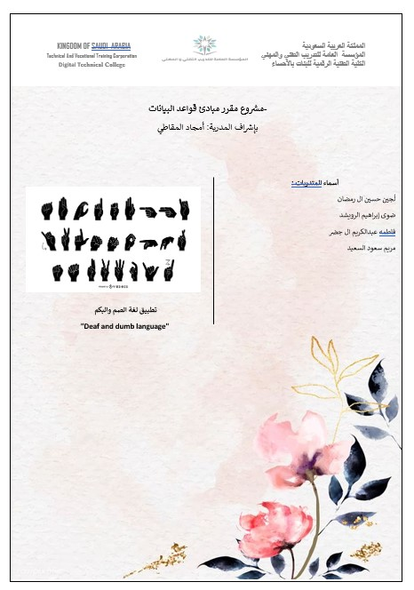
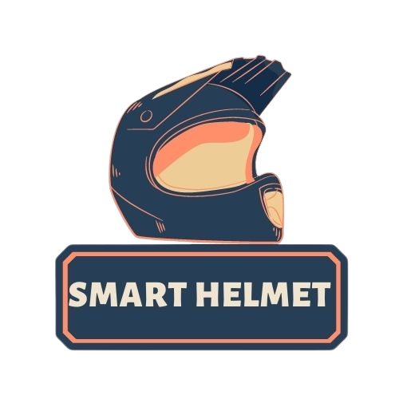

Projects
- -Deaf and dumb language application:-
- The application makes it easier for the student to register in schools and learning centers and choose teachers, and private lessons can be taken at home, and the admissions and registration officer can use his data in modification, deletion and follow-up of his condition in the language of (SQL)
- -King Faisal Hospital and Research Center:-
- An application to facilitate the patient to open a file at King Faisal Specialist Hospital and Research Center in (javascript)
- -user accounts system:-
- Add, modify and delete accounts, login, user permissions in (php)
- -Smart Helmet (graduation project):-
- We designed a smart helmet for bicycle owners. The Arduino microcontroller (Nano) was used. The sensor (the sensor), the Bluetooth sensor, and the camera were connected to the back, along with a screen, sound sensor (mic) and an 8 ohm speaker. The goal is to reduce accidents
- -Program Registration Site:-
- A special site for the Director of the Educational Training and Scholarship Center to receive requests for presenting programs in the Training Department by supervisors.

